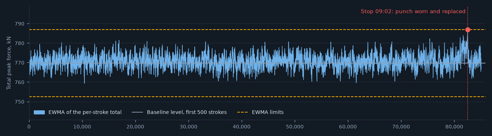
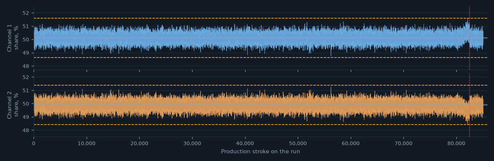
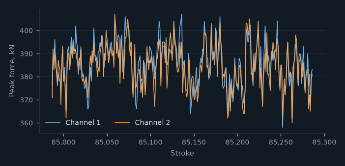

Press monitor historian · PR-03
7 October 202509:45
RUNNING
PressPR-03
DieD-6315-A
PartP-16315
RunR25-01738
Strokes per minute169
Run stroke count85,286
Die shot count9,996,286
Per-stroke total: EWMA since the first 500 production strokeslambda 0.02, limits at 5.5 sigma

Channel shares of the totallevel of the first 500 strokes, limits at 5.5 sigma

Now
752.6 to 786.8
EWMA limits, kN
Latest strokes: peak force by channel, last 300

Die D-6315-A: shots since sharpeningsharpened 6 September 2025
| Shots since sharpening | 85,286 |
|---|
| Sharpening due count (burr at 80% of the limit) | 128,886 |
|---|
| Strokes to go | 43,600 |
|---|
Punch replacements since the last sharpening
| When | Entry | Toolmaker |
|---|
| 07 Oct 09:02 | punch worn and replaced after a tonnage stop (EWMA) | E-1032 |
Stop log, run R25-01738
| Time | Stroke | Chart | Signal at the stop | Toolmaker's finding | Punch replaced | Minutes to restart |
|---|
| 09:02:39 | 82,740 | EWMA on the total | EWMA 786.9 kN against the limit 786.8 kN | punch worn and replaced | yes | 27 |
Press monitor historian · PR-03Signal stop: historian to press control external stop input.